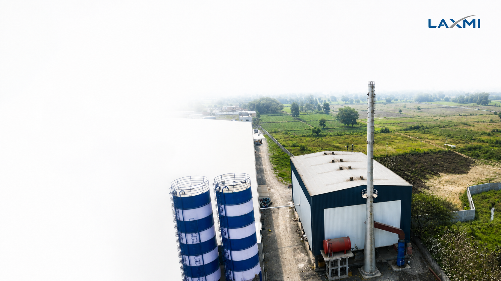

SYSTEM 07 · STEAM & UTILITIES
AAC Industrial Steam Boiler Systems
High-efficiency biomass, coal, briquette, and gas-fired steam boilers (4 TPH to 12 TPH) engineered to deliver steady 16–18 bar saturated steam matched with autoclave peak demand curves.
4–12 TPH
Boiler Capacity Range
17.5 kg/cm²
Working Steam Pressure
82–88 %
Thermal Efficiency

HIGH-EFFICIENCY STEAM GENERATION · CONDENSATE RECOVERY
IBR BOILER
BOILER SIZING CALCULATION
Matching Boiler TPH with Autoclave Schedule
An AAC boiler must be sized for peak concurrent steam demand during the initial pressurization phase of multiple autoclaves, not average steam consumption.
| Target Plant Output | Autoclaves In Operation | Peak Steam Demand | Recommended Boiler Rating | Economizer / Condensate Saving |
|---|---|---|---|---|
| 150 m³/Day | 2 Units (Ø2.0m × 21m) | ~2.5 – 3.0 Tons/hr | 3.5 – 4.0 TPH | Condensate return saves 12–15% fuel |
| 300 m³/Day | 4 Units (Ø2.0m × 31m) | ~4.5 – 5.5 Tons/hr | 6.0 TPH | Air pre-heater + economizer saves 20% fuel |
| 600 m³/Day | 6 Units (Ø2.5m × 31m) | ~7.5 – 9.0 Tons/hr | 10.0 TPH | Inter-autoclave steam transfer reduces 25% peak demand |
| 1,000+ m³/Day | 8–10 Units (Ø2.5m × 35m) | ~11.0 – 14.0 Tons/hr | 12.0 – 15.0 TPH | Dual-boiler synchronized header configuration |
Optimize Your Steam Consumption & Fuel Cost
Laxmi En-Fab designs complete boiler houses with steam headers, condensate return loops, and water softening plants.
Consult Boiler Engineers →